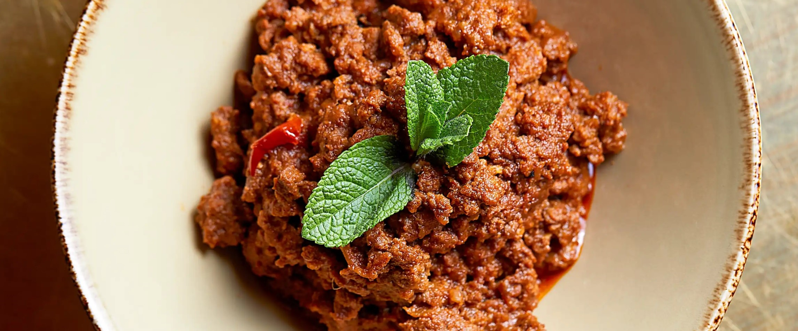

Mutton Keema (Minced Lamb) Recipe

Ingredients (serves 6 people)
- vegetable oil 4 tbsp
- green cardamom pods 2
- cassia bark 2½cm piece>
- dried red chillies 2
- Indian bay leaves 2 small
- onion 1 medium, finely chopped
- garlic paste ½ tsp
- ginger paste 1 tsp
- mutton or lamb mince 500g
- ground coriander 1 tsp
- whole cumin seeds ½ tsp, toasted and crushed
- chilli powder ¼ tsp
- ground turmeric ½ tsp
- tomato purée 1 tbsp
- lemon juice 1 tbsp
- mint leaves to serve
Preparation
- Heat the oil in a non-stick pan over a medium-high heat and briefly
toast the cardamom pods, cassia bark, dried chillies and bay leaves.
Immediately add the onion and cook for 1 minute, stirring, then add the
garlic and ginger pastes and cook for a further minute.
- Add the mutton or lamb, breaking up any clumps with a wooden spoon.
Sprinkle in the ground coriander, cumin seeds, chilli powder and turmeric.
Cook, uncovered, until all the liquid from the mince has evaporated. Add
100ml of just-boiled water, the tomato purée and ¾ tsp of salt, and stir
everything together.
- Bring the mixture to the boil, then cover with a lid and simmer for
15 minutes. Uncover and continue to cook over a medium-high heat until
almost all the liquid has been reduced. Remove from the heat, stir in the
lemon juice and scatter with the mint before serving.
- Adjust seasoning as needed.
- Serve!